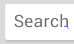
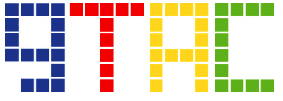
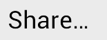
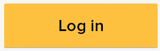
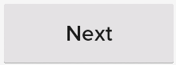

import unittest
from andwalker import MonkeySikuliDevice
CHROME_PACKAGE = 'com.android.chrome'
POCKET_PACKAGE = 'com.ideashower.readitlater.pro'
class ChromePocketTest(unittest.TestCase):
def setUp(self):
self._device = MonkeySikuliDevice(DEVICE_SERIAL_NUMBER, SCREEN)
self.reset_pocket()
self._device.open_app(CHROME_PACKAGE)
def test_chrome_pocket_share(self):
if not exists(): self.close_all_tabs()
tap()
type(, 'gtac2014')
tap() # soft keyboard
tap(Pattern().targetOffset(-123,-17))
wait()
pressMenu()
tap()
tap()
tap() # then Pocket opens
assert exists()
def reset_pocket(self):
"""To make sure Pocket is initialized and the list is empty."""
self._device.clear_app(POCKET_PACKAGE)
self._device.open_app(POCKET_PACKAGE,
'com.ideashower.readitlater.activity.AppCacheCheckActivity')
tap()
type(,'imsardine.test@gmail.com')
type(, 'passw@rd')
tap()
wait()
for _ in range(3):
tap()
tap( )
wait()
def close_all_tabs(self):
"""For the sake of demostartion, because the UI for switching tabs
is not accessible.
"""
tap(Pattern().targetOffset(53,5)) # target offset
for _ in findAll():
tap()
assert exists()
if __name__ == '__main__':
unittest.main()
)
wait()
def close_all_tabs(self):
"""For the sake of demostartion, because the UI for switching tabs
is not accessible.
"""
tap(Pattern().targetOffset(53,5)) # target offset
for _ in findAll():
tap()
assert exists()
if __name__ == '__main__':
unittest.main()